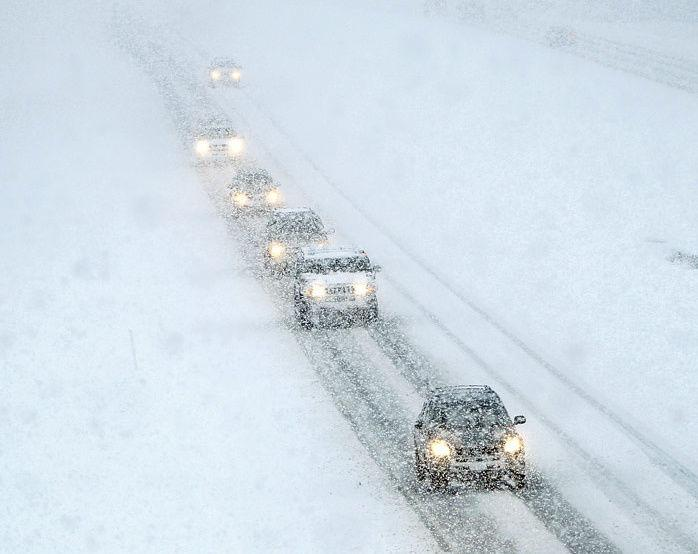

A powerful winter storm is hitting East
Idaho,
dumping several inches of snow and bringing destructive
winds to the region that have already resulted in two major
road closures.
The Idaho Transportation Department reported Sunday
afternoon that Highway 30 between Lava Hot Springs and Soda
Springs and Highway 34 between Soda Springs and the Wyoming
state line had been shut down because of blowing snow that
drastically reduced visibility. As of 4:30 p.m. Sunday,
Highway 30 had been reopened, although the Caribou County
Sheriff's Office reported conditions on the road are still
potentially hazardous. Highway 34 will remain closed until
the storm subsides.
The storm arrived in East Idaho Sunday morning and is
forecast to continue through Sunday night.
One new development with the storm is that it could cause
avalanches in western Fremont County and an avalanche
warning was issued Sunday morning for that area by the
National Forest Avalanche Center in Bozeman, Montana.
Backcountry travelers should stay away from the mountains of
western Fremont County until the avalanche threat subsides.
In addition, the National Weather Service reports that the
storm will cause wind chill conditions in East Idaho's
higher elevations on Sunday that will make temperatures feel
like they're minus 15 degrees. Such wind chill can cause
frostbite in as little as 30 minutes.
The National Weather Service has issued winter storm
warnings, winter weather advisories and wind advisories for
East Idaho because of the storm.
